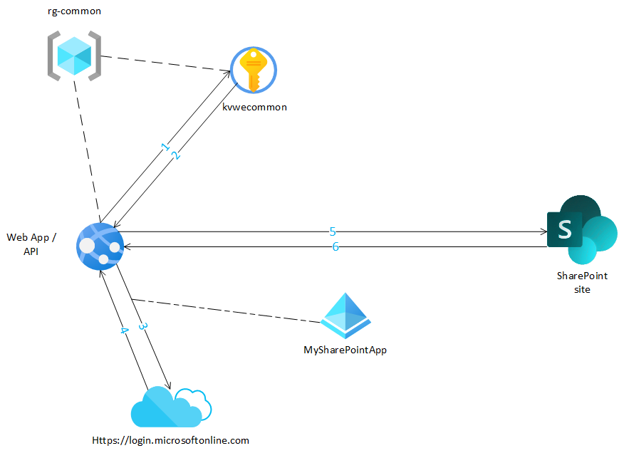
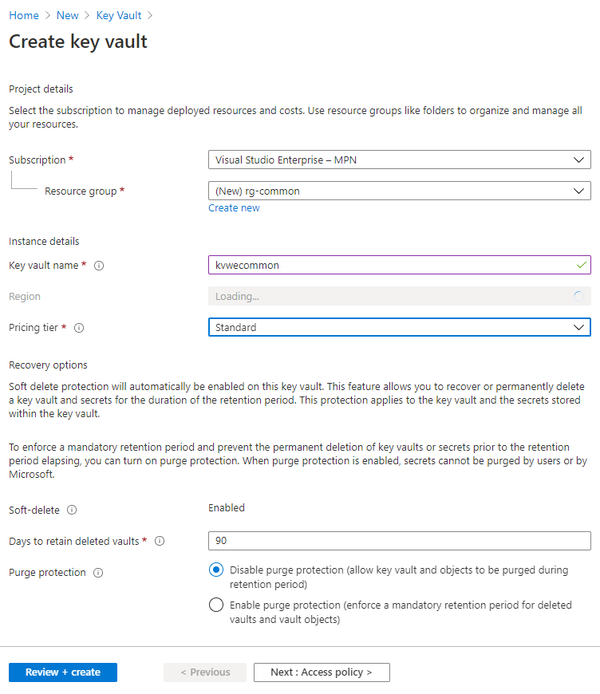
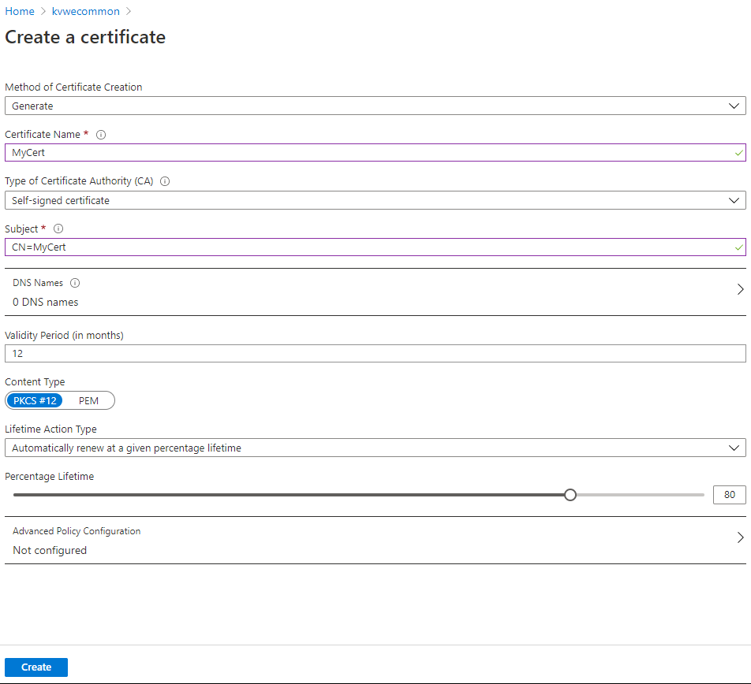
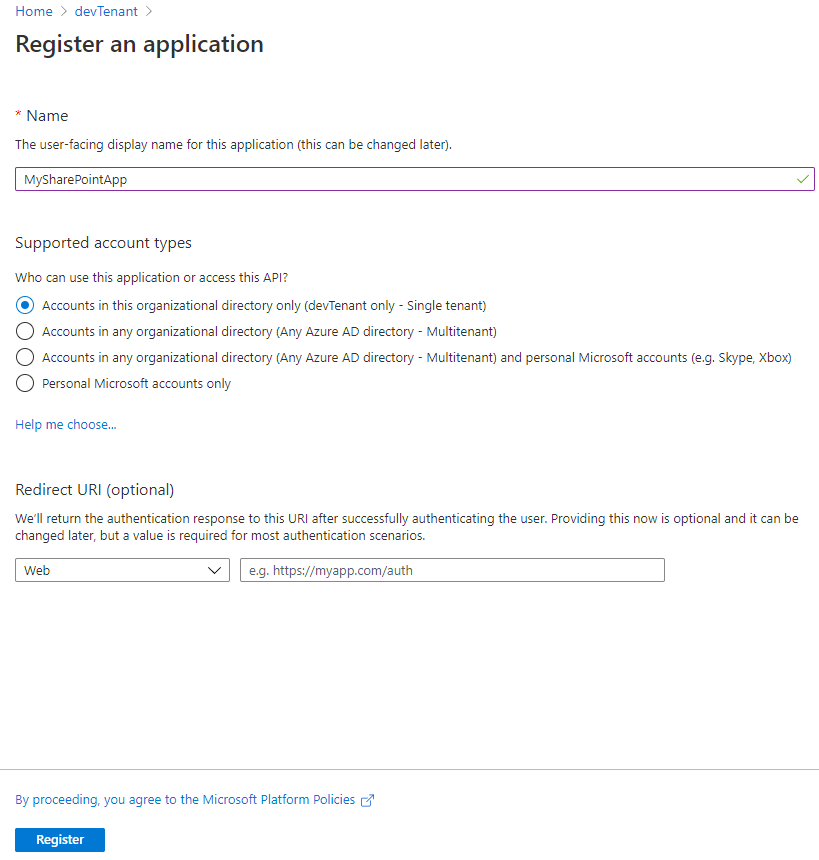
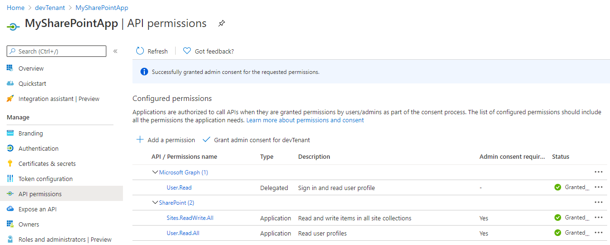
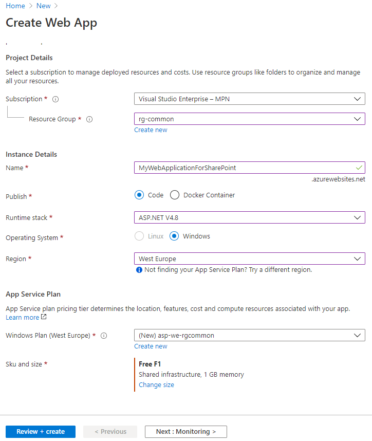
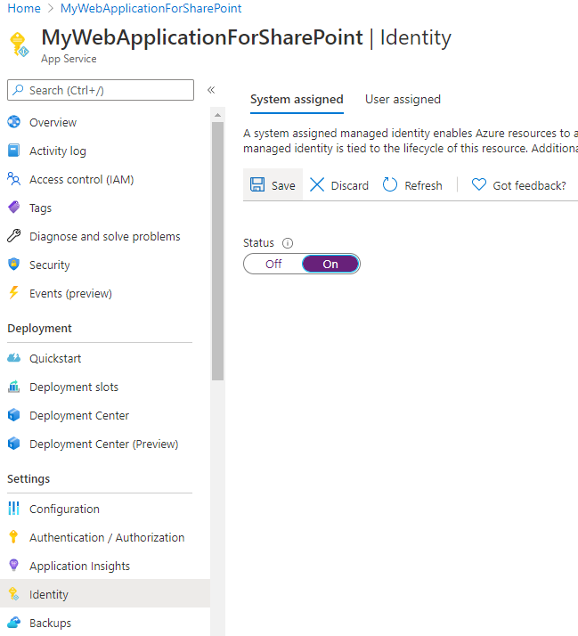
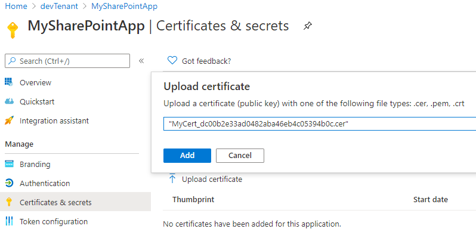
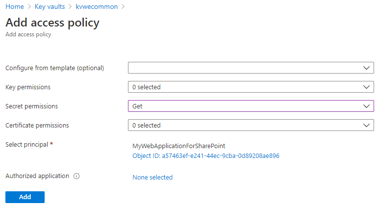
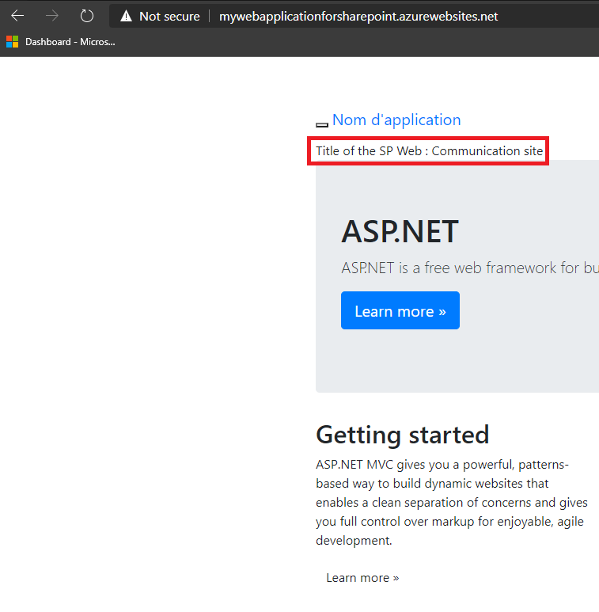

Connect to SharePoint in an AAD Application permission context with a certificate stored in Azure KeyVault
Use Case
You work on a Web Application (or API) which is connected to a SharePoint Tenant.
You want to setup things correctly and want to execute SharePoint actions in Azure Active Directory (AAD) Application permission context.
Goal of this article
This article will show how to work with a SharePoint site through an API or a Web Application, only with AAD Application permissions.
It will demonstrate how to setup everything and how to connect with a certificate stored in a Key Vault, step by step, in UI, PowerShell and Azure CLI.
Let's see the final result below

The Web Application (or API)...
- Requests access to the Key Vault, in order to get the stored certificate
- Gets the Key Vault certificate
- Authenticates to Office 365 using the SharePoint AAD Application with the certificate
- Gets a ClientContext with the requested API permissions
- Uses the ClientContext object to query the SharePoint site
- Gets Web info
(I've shrinked the 3. because there are somes requests are made to https://login.microsofonline.com, more info here)
Prerequisites
- An Office 365 (Dev) Tenant or a Partner Demo Tenant
- An Azure subscription and the following Azure AD role at least
- Application Administrator
- Command Interface (one of these)
- PowerShell (with Az PowerShell and AzureAD PowerShell)
- Azure CLI (on your machine or through Azure Cloud Shell)
- Visual Studio (2017 or later)
Why authenticating by certificate and not by Client ID / Secret
In AAD Application permission context, for unknown reason, you can't work with SharePoint REST API using Client ID / Secret connection. It only works with a connection using Client ID / Certificate.
I've posted a solution as an answer on Stack Overflow a couple months ago.
But in some cases, you have no choice but to work with a Client ID / Secret (like for example writing in the User Profile Service). In that case, use the legacy App-Only principal context
Why using two Azure PowerShell Modules
Even if Microsoft provides a module that covers most Azure resources and the most popular is Az PowerShell, this one does not cover all features regarding AAD.
For instance, let's compare one command and the options provided.
| New-AzADApplication | New-AzureADApplication |
|---|---|
| -DisplayName | -DisplayName |
| -IdentifierUris | [-IdentifierUris] |
| [-HomePage] | [-Homepage] |
| [-ReplyUrls] | [-ReplyUrls] |
| [-AvailableToOtherTenants] | [-AvailableToOtherTenants] |
| [-KeyCredentials] | [-KeyCredentials] |
| [-PasswordCredentials] | [-PasswordCredentials] |
| [-StartDate] | / |
| [-EndDate] | / |
| [-CertValue] | / |
| [-Password] | / |
| / | [-AppRoles] |
| / | [-Oauth2Permissions] |
| / | [-AddIns] |
| / | [-AllowGuestsSignIn] |
| / | [-AllowPassthroughUsers] |
| / | [-AppLogoUrl] |
| / | [-ErrorUrl] |
| / | [-GroupMembershipClaims] |
| / | [-InformationalUrls] |
| / | [-IsDeviceOnlyAuthSupported] |
| / | [-IsDisabled] |
| / | [-KnownClientApplications] |
| / | [-LogoutUrl] |
| / | [-Oauth2AllowImplicitFlow] |
| / | [-Oauth2AllowUrlPathMatching] |
| / | [-Oauth2RequirePostResponse] |
| / | [-OrgRestrictions] |
| / | [-OptionalClaims] |
| / | [-ParentalControlSettings] |
| / | [-PreAuthorizedApplications] |
| / | [-PublicClient] |
| / | [-PublisherDomain] |
| / | [-RecordConsentConditions] |
| / | [-RequiredResourceAccess] |
| / | [-SamlMetadataUrl] |
| / | [-SignInAudience] |
| / | [-WwwHomepage] |
As you can see, the AzureAD Module provides more options just in this example.
And as stated here, the AzureAD module is the one to use when working with AAD.
Connect to Azure
1 2 3 4 5 | |
1 2 3 4 5 | |
1 2 3 4 5 | |
Create Key Vault (and the Ressource Group)
The first step is to create the Key Vault that will store the certificate.
Create Key Vault through interface

Create Key Vault with code
1 2 3 4 5 | |
1 2 3 4 5 | |
Add certificate to Key Vault
Once the Key Vault is created, we'll use its certificate creation feature to init one.
Add certificate through interface

Add certificate with code
1 2 3 4 5 6 | |
1 2 3 4 5 6 | |
Register AAD Application (and apply admin consent)
Like said before, to connect to SharePoint as an application, you have two options:
- using the AAD Application context (accepts Client ID / Secret and certificate)
- using the SharePoint App-Only principal context (accepts Client ID / Secret)
As we'll authenticate with a certificate, the only way is to use the AAD Application context.
Register AAD App through interface


Register AAD App with code
To register Application permissions, you have to indicate which API you want to use and check the permissions required for you needs. If it's transparent for you when you register through the Azure Portal, let me explain how does it work under the hood.
Whether you want to work with SharePoint, Microsoft Graph, Dynamics or else, each service is registered as a service principal (Enterprise Application in AAD). And each of these contains AppRoles (for Application permissions) and Oauth2Permissions (Delegated permissions).
You'll notice later in the article that, for those service principals, we can refer to them as AppId and ObjectId. Depending on the command executed, the ObjectId will be required because it's unique, instead of the AppId which is the same whatever the organization is. For instance, the AppId for SharePoint is 00000003-0000-0ff1-ce00-000000000000 and for Microsoft Graph 00000003-0000-0000-c000-000000000000.
From the moment where you want to add permissions, you must register your application as a service principal too, in order to enable those permissions for your organization.
Instead of the AAD Application registration user interface, you have to declare both AAD Application and its service principal (the Enterprise Application)
Now that you know this, we'll see how to register the appropriate permissions and especially when admin consent is required.
Register AAD App with PowerShell
1 2 3 4 5 6 7 8 9 10 11 12 13 14 15 16 17 18 19 20 21 22 23 24 25 26 27 28 29 30 31 32 33 34 35 36 37 38 39 40 41 | |
Register AAD App with Azure CLI
1 2 3 4 5 6 7 8 9 10 11 12 13 14 15 16 17 18 19 20 21 22 23 24 25 26 27 28 | |
(optional) Grant Admin Consent on Delegated permissions with PowerShell
For now, if you want to work with delegated permissions on PowerShell, there's no cmdlet to grant admin consent (instead of Azure CLI, as you've see before).
The only approach is to use Microsoft Graph, which provides methods to add / consent Delegated permissions. Full example here.
1 2 3 4 5 6 7 8 9 10 11 12 13 14 15 16 17 18 19 | |
Register Web Application / API Application
Now, we're going to create the resource that will query the SharePoint site. It can be a Web Application or an API.
In this example, it will be a Web Application (but in the end, the code used for connecting to SharePoint will be the same).
Once the Web Application created, you will have to enable Managed Identity, in order to allow the resource to access the Key Vault. This will lead in the creation of a service principal you'll be able to find in the AAD Enterprise Applications page.
Register the resource through interface

Enable Managed Identity through interface

Register the resource with code (and enable Managed Identity)
1 2 3 4 5 6 7 8 9 10 | |
1 2 3 4 5 | |
Upload Key Vault Certificate into AAD Application
By importing the certificate (created with the Key Vault) in the AAD Application, you allow an authentication to SharePoint when requesting access to the Tenant, with a Client ID / Certificate.
Upload through interface

Upload with code
1 2 3 4 5 6 | |
1 2 3 4 5 | |
Grant Web Application to get Key Vault Secret
When using Microsoft.Azure.KeyVault library, we used to grant certificate (GET) access policy to certificate. But as this library is replaced by the Azure.Security .NET Libraries, we have to use the Keyvault.Secrets service because until now, there's no method provided to get a Key Vault Certificate with the certificate (GET) access policy. Furthermore, the Certificate in Key Vault is more a concept than just a type of Secret.
That's why we're going to setup a secret (GET) access policy.
Grant access through interface

Grant access with code
1 2 3 4 5 | |
1 2 3 4 5 | |
Init ASP.NET Web Application Project
To init your project (.NET Framework 4.8 C#), you can follow this quickstart (and if you want to try with an API deployed in an Azure API, just select "Web API" instead of "MVC").
Get Nuget Packages (Azure, SharePoint)
Below the Nuget packages required to test the architecture:
- Azure.Identy (for the authentication to the KeyVault)
- Azure.Security.KeyVault.Secrets (to get the certificate)
- Microsoft.SharePointOnline.CSOM (to work with SharePoint Site)
- SharePointPnPCoreOnline (to easily authenticate to SharePoint site)
Setup connection to Azure
To setup a connection to Azure through the Identity SDK, you can use the DefaultAzureCredential() class which will follow a specific mechanism based on the execution environment, which make this part easy to manage. To sum up, you'll be able to authenticate both in Visual Studio (as a user) and in Azure (as a managed identity / service principal) with the same method.
More info here (this article also explains how to configure connection to Azure from Visual Studio).
Below the snippet you can use to connect to the Key Vault, in order to get the certificate.
1 2 3 4 5 6 7 8 9 10 11 | |
Setup connection to SharePoint
Once you got the certificate, you can authenticate to SharePoint site with it, in order to get a ClientContext object.
1 2 3 4 5 6 7 8 9 10 11 12 | |
Get Web Info
With the ClientContext object instantiated before, you can get for example info about your site.
1 2 3 4 5 6 7 8 9 10 11 12 13 14 15 16 17 18 19 | |
1 2 3 4 5 6 7 8 9 | |
Deploy the solution
Once you got everything, you can test your Web Application locally then by publishing it (right-click on the project and select Publish).
Then select Azure as target, Azure App Service (Windows) and select the correct Azure account, the subscription used until now, the resource group and the Web Application we created together (here rg-common and MyWebApplicationForSharePoint).
That's it
You should see something like this :

If you have any question or if you encounter any problem during the execution of the commands, feel free to send a Tweet or a DM 😉